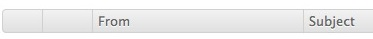

WebClient Tablet Interface
De WebClient Tablet-interface is geoptimaliseerd voor aanraakschermen en de standaardkeuze voor tabletbrowsers zoals Safari op iPad, Chrome op Android-tablets of Silk op Kindle Fire. Wanneer u zich aanmeldt vanaf deze apparaten, wordt u automatisch doorgestuurd naar de tabletinterface.De tabletinterface is niet afhankelijk van JavaScript en is daarom compatibel met oude of mobiele browserversies die niet met Full WebClient overweg kunnen. Alle bewerkingen vereisen alleen de linker muisknop en klikken op standaard webelementen zoals selectievakjes, knoppen en vervolgkeuzemenu's. Er zijn geen contextmenu's of venstermenu's.
Tap

De pictogramwerkbalk geeft je vinger-vriendelijke toegang tot alle essentiële e-mail- en groupware-functies - onderverdeeld in scopes die overeenkomen met de gekleurde pictogrammen in het bovenste menu.
- Adresboek
- Agenda
- Taken
- Notities
- Bestanden
Als u nieuwe berichten wilt ontvangen, klikt u op het enveloppictogram boven aan het scherm.

Als u wilt beginnen met het opstellen van een nieuw bericht, maakt u een nieuwe contact- of distributielijst, nieuwe gebeurtenis of uitnodiging voor een vergadering, nieuwe taak, nieuwe notitie of uploadt u een nieuw bestand, klikt u op het overeenkomstige pictogram in de werkbalk en klikt u op de Nieuw knop.
Voor de berichten die vandaag ontvangen zijn wordt alleen de tijd getoond. Voor oudere e-mails wordt alleen de datum getoond. Als u alle informatie wilt zien, beweegt u de muis eroverheen. Als u volledige kopteksten wilt zien, klikt u op de knop Details.
Draaien

Horizontale weergave toont al uw favoriete mappen in een lijst aan de linkerkant. De huidige map is vetgedrukt met een punt. Gebruik de optie Mapbeheer om meer mappen aan de lijst toe te voegen. Verticale weergave vouwt de mappenlijst samen in een vervolgkeuzemenu aan de rechterkant. Tik op de knop met de naam van de huidige map om toegang te krijgen tot andere mapopties.

Met de optie Mapbeheer kunt u een snelkoppeling naar een map openen of maken die nog niet in de lijst staat en deze snel toegankelijk maken. Het maakt het ook mogelijk om mappen toe te voegen, te hernoemen, te verwijderen of een map standaard te maken.
Swipe

Natuurlijke veegbewegingen worden ondersteund in alle pagina-weergaven (lijst met e-mails, contacten, alle agenda-weergaven enzovoort) en u kunt verder- en teruggaan in de lijsten alsof u in een boek bladerd:
Volgende pagina: Van rechts naar links
Vorige pagina: van links naar rechts(zie bovenstaande afbeelding)

Als een alternatief voor vegen met je vinger, kun je de paginabediening rechts gebruiken (boven en onder herhaald voor snellere toegang), die ook de huidige positie en het totale aantal pagina's tonen.

U kunt vegen tussen berichten, contacten, notities enzovoort. Als een alternatief zijn er pijlen om naar het volgende bericht te gaan of het vorige bericht na het openen van een bericht.
Fast Reply

Wanneer u geen speciale opmaak of afleveropties nodig hebt, levert "snel antwoorden" u alleen een tekstgebied om te antwoorden aan de oorspronkelijke afzender van het bericht dat u momenteel bekijkt.
Selecteren

Dit slaat alleen op de dingen op de huidige pagina
- om alle items op een pagina te selecteren gebruik "alles" of limiteer de selectie tot "gelezen" en "ongelezen"
- om de selectie ongedaan te maken kies "geen"
- gebruik "selectie omkeren" om alles wat niet geselecteerd is te selecteren en vice versa
Of gebruik de afzonderlijke selectievakjes naast elk item in de lijst om uw selectie te maken en voer vervolgens acties met ze uit.
Als u alle berichten in de map wilt selecteren, moet u mogelijk het aantal weergegeven items verhogen in Instellingen - Algemeen.
Beheren

Nadat u een of meer items hebt geselecteerd (het selectievakje is aangevinkt), kunt u een actie op hen uitvoeren met behulp van de actieknoppen (bijvoorbeeld Verwijderen, waarna u wordt gevraagd de verwijdering te bevestigen).

U kunt andere niet-veel voorkomende acties selecteren in het vervolgkeuzemenu Actie: klik op Markeren als ongelezen, blokkeren.
Zoeken

Typ een zin om te zoeken naar en te zoeken in alle aspecten van de gegevens die momenteel worden weergegeven (in e-mailonderwerpen / afzenders / ontvangers, in namen van contactpersonen / adressen enz.) Of gebruik trefwoorden om de zoekopdracht te beperken tot een specifiek criterium (bijvoorbeeld onderwerp: kantoor). De lijst met beschikbare trefwoorden is aan het einde van deze hulp.
Om de zoekopdracht te annuleren, tikt u op een werkbalkpictogram of -map of verwijdert u alles in de zoekwerkbalk en klikt u op Zoeken.
Spam weren

Gebruik de quarantaineoptie in de mappenlijst om toegang te krijgen tot uw toegestane en geblokkeerde adressen. Hier kunt u e-mailadressen zien die altijd zijn toegestaan of altijd zijn geweigerd. U kunt de adressen verwijderen of ze wijzigen van geblokkeerd naar toegestaan en omgekeerd.
Om een verzender of spammer te blokkeren:
- in de Quarantine lijst, kies de blokkeerlijst en klik op nieuw
- plaats in de weergave E-mail een selectievakje naast de e-mail en selecteer blokkeer in Acties: menu
- in de e-mailweergave, vink het selectievakje naast de e-mail aan, klik op Verplaatsen en selecteer
Om ervoor te zorgen dat u toegang heeft tot uw map Spam vanuit het menu Kopiëren / Verplaatsen, gebruikt u de optie Mapbeheer en de map Spam koppelen om uw favoriete mappenlijst vast te leggen.
Beheer mappen

Link-map betekent om een link naar deze map in de lijst met favoriete mappen te maken. Met een koppeling kunt u uw belangrijkste mappen gemakkelijker toegankelijk maken via de mappenlijst en de opties voor kopiëren / verplaatsen. U kunt de link ook een beschrijvende naam geven. Deze hoeft niet overeen te komen met de werkelijke mapnaam. De aangepaste naam verschijnt dan tussen haakjes in de map Mapbeheer.

Map openen door op de mapnaam te klikken, is handig om een map te openen die u niet vaak gebruike en niet is gekoppeld in het menu aan de linkerkant. De map wordt geopend zoals elke gekoppelde map.

Map toevoegen maakt een nieuwe map. U moet het maptype opgeven - of u e-mail, contacten of andere soorten items in de nieuwe map wilt opslaan.

Mapnaam wijzigen zal de map hernoemen. Als er een link naar die map in het linkermenu is, heeft dit geen invloed op de koppeling.

De standaardmap is de plek waar berichten worden ontvangen, verzonden of opgeslagen. Standaardmappen zijn altijd toegankelijk vanuit de lijst met favoriete mappen en kunnen niet worden hernoemd of verwijderd.

Verwijder map, verwijdert permanent alle inhoud van de map (wanneer u op "Legen" klikt) of permanent alle inhoud van de map en de map zelf (als u op "Verwijderen" klikt).
Aanpassen

Met de knop Instellingen (tussen de pictogrammen Help en Afmelden in de rechterbovenhoek) kunt u de tabletinterface aanpassen. Verschillende instellingen zijn ingedeeld in categorieën die als mappen worden weergegeven (aan de linkerkant in de hoge weergave of in de rechter vervolgkeuzelijst in de brede weergave).

- Algemeen: datum / tijd-indeling wijzigen, aantal items op pagina opgeven, Prullenbak inschakelen, automatisch ontvangers aan contactpersonen toevoegen, wachtwoord wijzigen en meer
- Opstellen: stel in dat altijd leesbevestigingen worden aangevraagd, plaats altijd verzonden berichten in de map Verzonden, bewerk uw handtekening, wijzig standaardlettertype en meer
- Aliassen: toevoegen / bewerken / verwijderen van meerdere aliassen (volledige naam en e-mailadres zoals deze worden weergegeven aan de e-mailontvanger)
- Autoresponder: een automatische antwoordfunctie met handige instellingen zoals Reageren Eenmaal op elke ontvanger, reageert alleen binnen bepaalde uren van de dag of reageert nooit op bepaalde adressen
- Forwarder: om binnenkomende e-mailberichten door te sturen of te kopiëren naar een ander e-mailadres
Annuleer

Gebruik de knop Terug van de browser om terug te gaan naar waar u was of annuleer het bewerken van een bericht, contactpersoon, agenda. Alle bewerkingen die u deed, zijn verloren. Of klik gewoon op een werkbalkpictogram.
Schakelen

Via de koppelingen naar de geavanceerde weergave, Mobiele weergave, kunt u snel schakelen tussen weergaves zonder uw inlognaam en wachtwoord opnieuw te hoeven geven. De geavanceerde weergave werkt mogelijk niet als u een oudere of mobiele browser gebruikt.
Smart Attach

Op Android-tablets en in desktopbrowsers kunt u bijlagen uploaden naar berichten. Als u het selectievakje "Gebruik SmartAttach" -bijlagen aanvinkt, wordt dit opgeslagen op de server (en in uw bestanden) en geleverd via downloadlinks die zijn ingesloten in de e-mail. Dit maakt levering aan mobiele gebruikers sneller en efficiënter.
Zoek trefwoorden
Niet alle trefwoorden zijn van toepassing op alle scopes, bijvoorbeeld onderwerp: is alleen van toepassing op e-mail, terwijl je in de agenda het trefwoord titel: moet gebruiken. Meerdere trefwoorden zijn standaard gekoppeld aan EN-operator (dit hoeft niet te worden gespecificeerd) en aan alle criteria moet worden voldaan, of u kunt OF- en NIET-logische operators gebruiken, zodat de volgende criteria optioneel kunnen worden gemaakt of items kunnen worden gevonden die niet aan de criteria voldoen.
van: gebruikt om de afzender op te geven (van: Amy)
tot: gebruikt om een ontvanger op te geven (naar: David)
onderwerp: zoeken naar woorden in de onderwerpregel (onderwerp: diner)
cc: gebruikt om ontvangers op te geven in het veld Cc:
bcc: gebruikt om ontvangers in het veld Bcc: te specificeren
volledige tekst: volledige berichttekst doorzoeken (fulltext: test)
prioriteit: zoeken op prioriteit hoogste, hoge, normale, lage, laagste (prioriteit: hoge)
na: zoeken naar berichten die na een bepaalde tijd zijn verzonden (na: 2004/04/16)
vóór: zoeken naar berichten die vóór de opgegeven tijd zijn verzonden (vóór: 2004/04/16)
titel: gebruikt om de itemtitel te specificeren (titel: test)
beschrijving: gebruikt om een beschrijving of opmerking op te geven (beschrijving: test)
naam: gebruikt om de naam van het contact te specificeren
e-mail: gebruikt om e-mail te specificeren
zoekwoord: zoeken naar items met opgegeven tag (tag: Zakelijk)
tag: zoeken naar items met opgegeven tag (tag: Zakelijk)
groter: zoeken afhankelijk van de grootte in kB (groter: 1024)
kleiner: zoeken afhankelijk van de grootte in kB (kleiner: 1024)
bedrijf: zoek contacten tegen bedrijf (bedrijf: IceWarp)
afdeling: contacten doorzoeken op afdeling (afdeling: IT)
locatie: contacten doorzoeken op locatie (locatie: Ede)